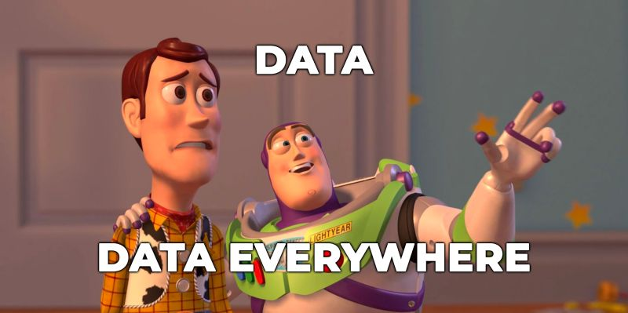
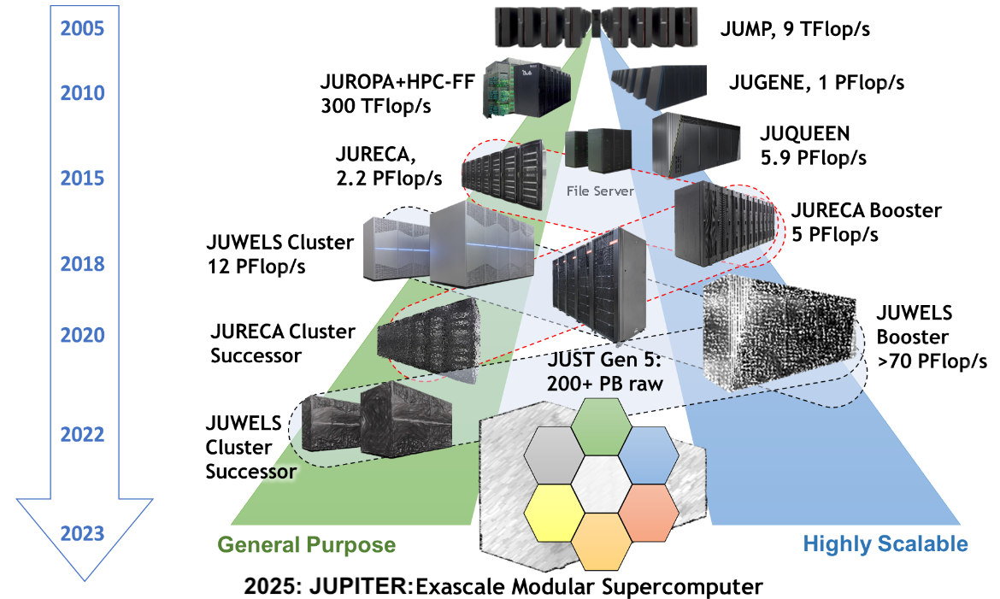
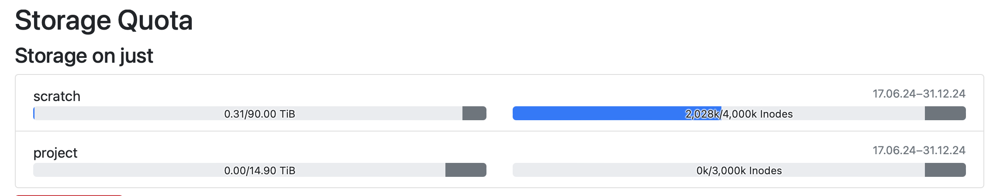
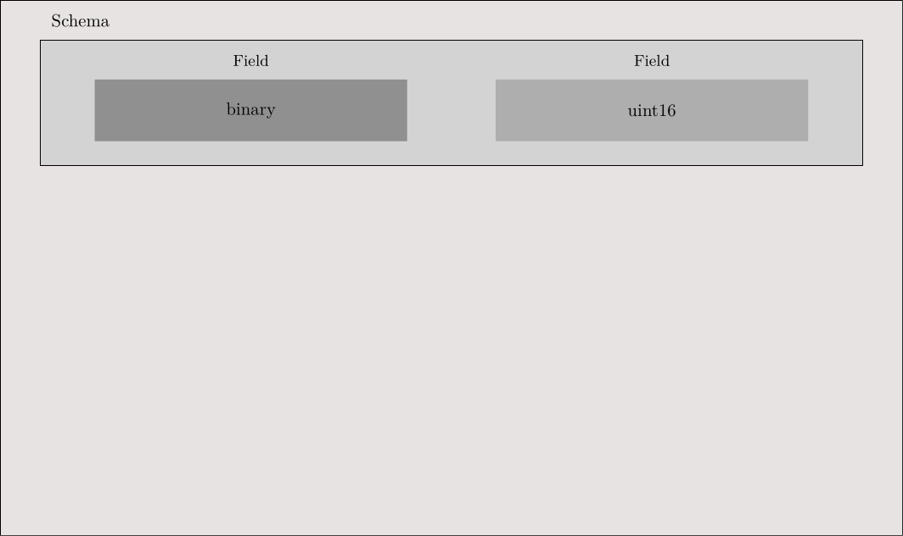
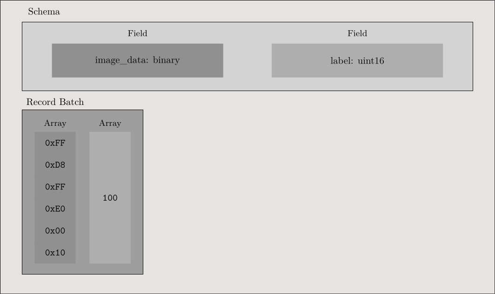
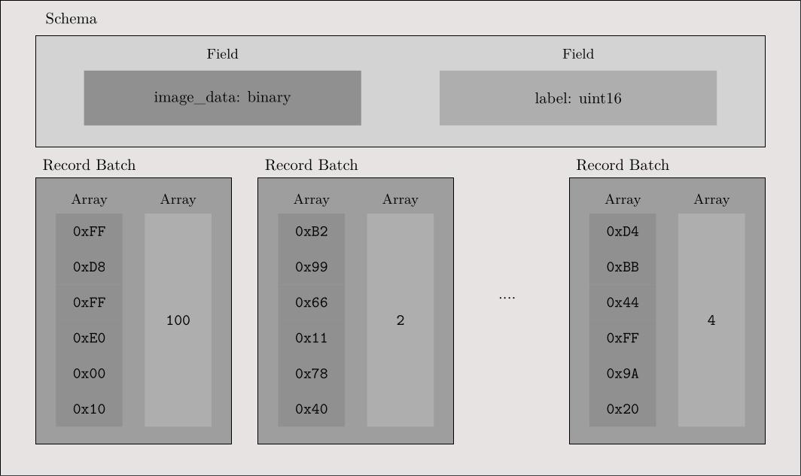
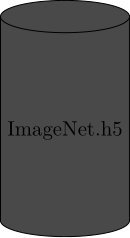
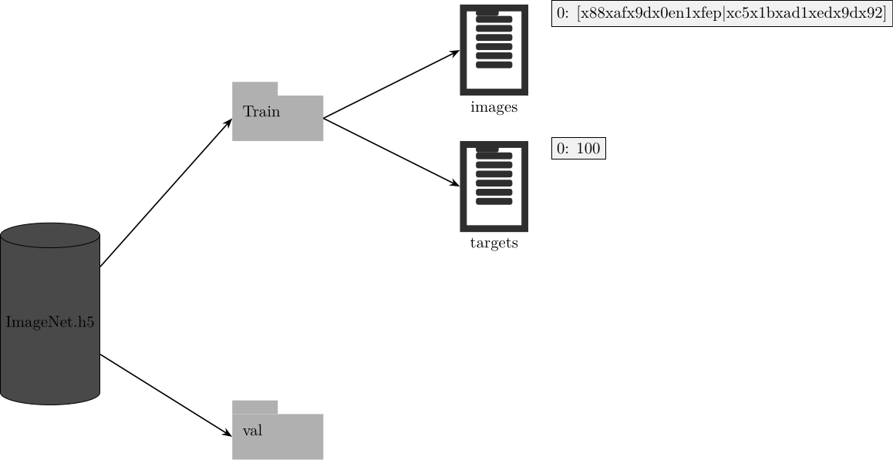
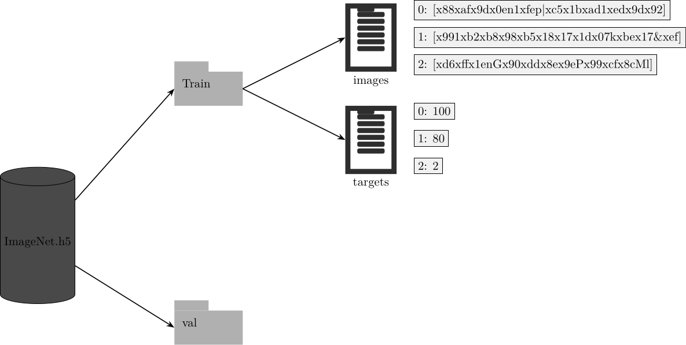
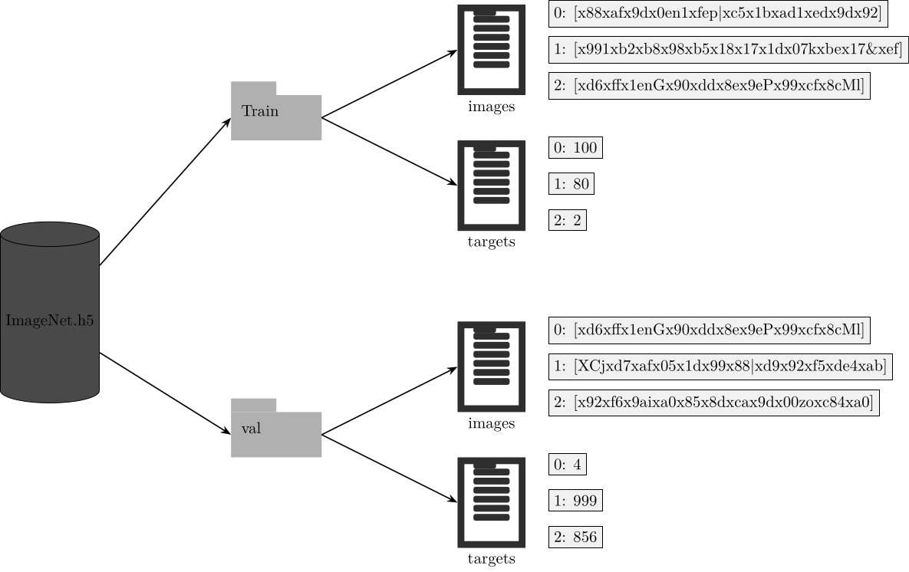

Bringing Deep Learning Workloads to JSC supercomputers
Data loading
Alexandre Strube // Sabrina Benassou // José Ignacio Robledo
December 5th, 2024
Schedule for day 2
| Time | Title |
|---|---|
| 10:00 - 10:15 | Welcome, questions |
| 10:15 - 11:30 | Data loading |
| 11:30 - 12:00 | Coffee Break (flexible) |
| 12:30 - 14:00 | Parallelize Training |
Let’s talk about DATA

I/O is separate and shared
- All compute nodes of all supercomputers see the same files
- Performance tradeoff between shared acessibility and speed
- Our I/O server is almost a supercomputer by itself 
Where do I keep my files?
Always store your code in the project folder (
$PROJECT_projectname). In our caseStore data in the scratch directory for faster I/O access (
$SCRATCH_projectname). Files in scratch are deleted after 90 days of inactivity.Store the data in
$DATA_datasetfor a more permanent location. This location is not accessible by compute nodes. Please copy the data to scratch to ensure your job can access it.
Data loading
- We have CPUs and lots of memory - let’s use them
- If your dataset is relatively small (< 500 GB)
and can fit into the working memory (RAM) of each compute node (along
with the program state), you can store it in
/dev/shm. This is a special filesystem that uses RAM for storage, making it extremely fast for data access. ⚡️ - For bigger datasets (> 500 GB) you have many
strategies:
- Hierarchical Data Format 5 (HDF5)
- Apache Arrow
- NVIDIA Data Loading Library (DALI)
- SquashFS
Data loading
- In this course, we will demonstrate how to store your data in HDF5 and PyArrow files.
- We will use the ImageNet dataset to create HDF5 and PyArrow files.
But before
We need to download some code
Move to the correct folder
cd 2024-12-course-Bringing-Deep-Learning-Workloads-to-JSC-supercomputers/code/dataloading/
The ImageNet dataset
Large Scale Visual Recognition Challenge (ILSVRC)
- An image dataset organized according to the WordNet hierarchy.
- Extensively used in algorithms for object detection and image classification at large scale.
- It has 1000 classes, that comprises 1.2 million images for training, and 50,000 images for the validation set.

The ImageNet dataset
ILSVRC
|-- Data/
`-- CLS-LOC
|-- test
|-- train
| |-- n01440764
| | |-- n01440764_10026.JPEG
| | |-- n01440764_10027.JPEG
| | |-- n01440764_10029.JPEG
| |-- n01695060
| | |-- n01695060_10009.JPEG
| | |-- n01695060_10022.JPEG
| | |-- n01695060_10028.JPEG
| | |-- ...
| |...
|-- val
|-- ILSVRC2012_val_00000001.JPEG
|-- ILSVRC2012_val_00016668.JPEG
|-- ILSVRC2012_val_00033335.JPEG
|-- ...The ImageNet dataset
imagenet_train.pkl
{
'ILSVRC/Data/CLS-LOC/train/n03146219/n03146219_8050.JPEG': 524,
'ILSVRC/Data/CLS-LOC/train/n03146219/n03146219_12728.JPEG': 524,
'ILSVRC/Data/CLS-LOC/train/n03146219/n03146219_9736.JPEG': 524,
...
'ILSVRC/Data/CLS-LOC/train/n03146219/n03146219_7460.JPEG': 524,
...
}imagenet_val.pkl
Access File System
class ImageNet(Dataset):
def __init__(self, root, split, transform=None):
file_name = "imagenet_train.pkl" if split == "train" else "imagenet_val.pkl"
with open(os.path.join(args.data_root, file_name), "rb") as f:
train_data = pickle.load(f)
self.samples = list(train_data.keys())
self.targets = list(train_data.values())
self.transform = transform
def __len__(self):
return len(self.samples)
def __getitem__(self, idx):
x = Image.open(os.path.join(self.samples[idx])).convert("RGB")
if self.transform:
x = self.transform(x)
return x, self.targets[idx]
Inodes
- Inodes (Index Nodes) are data structures that store metadata about files and directories.
- Unique identification of files and directories within the file system.
- Efficient management and retrieval of file metadata.
- Essential for file operations like opening, reading, and writing.
- Limitations:
- Fixed Number: Limited number of inodes; no new files if exhausted, even with free disk space.
- Space Consumption: Inodes consume disk space, balancing is needed for efficiency. 
Pyarrow File Creation
Pyarrow File Creation

Pyarrow File Creation

Pyarrow File Creation

Pyarrow File Creation

Access Arrow File
def __getitem__(self, idx):
if self.arrowfile is None:
self.arrowfile = pa.OSFile(self.data_root, 'rb')
self.reader = pa.ipc.open_file(self.arrowfile)
row = self.reader.get_batch(idx)
img_string = row['image_data'][0].as_py()
target = row['label'][0].as_py()
with io.BytesIO(img_string) as byte_stream:
with Image.open(byte_stream) as img:
img = img.convert("RGB")
if self.transform:
img = self.transform(img)
return img, targetHDF5

HDF5
HDF5
HDF5

HDF5

HDF5

Access h5 File
def __getitem__(self, idx):
if self.h5file is None:
self.h5file = h5py.File(self.train_data_path, 'r')[self.split]
self.imgs = self.h5file["images"]
self.targets = self.h5file["targets"]
img_string = self.imgs[idx]
target = self.targets[idx]
with io.BytesIO(img_string) as byte_stream:
with Image.open(byte_stream) as img:
img = img.convert("RGB")
if self.transform:
img = self.transform(img)
return img, targetDEMO
Exercise
- Could you create an arrow file for the flickr
dataset stored in
/p/scratch/training2449/data/Flickr30K/and read it using a dataloader ?